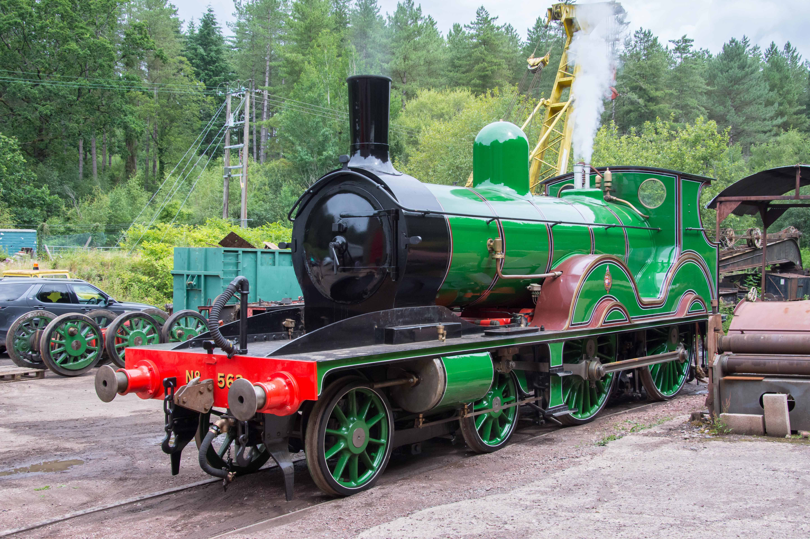
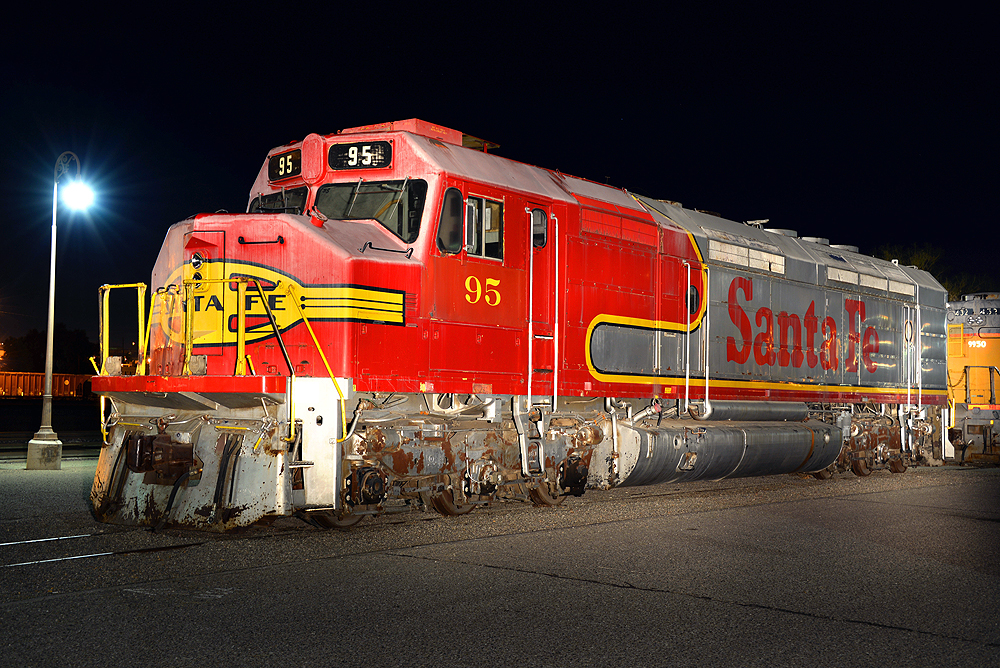
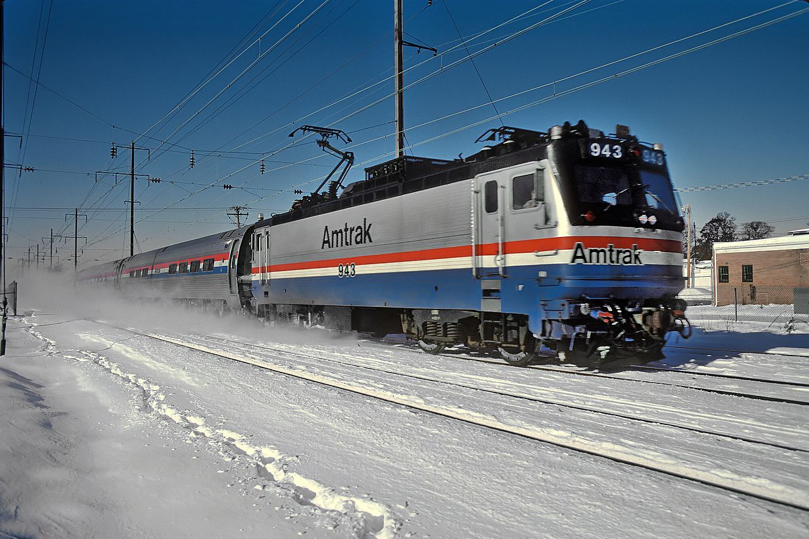
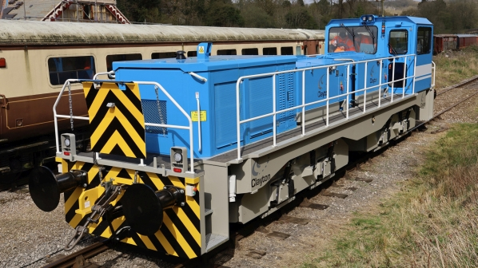

| Steam Trains |
Diesel |
Electric |
Hybrid |
|  |
 |
 |
 |
| These engines run off of coal, wood, or oil being lit and placed into a fire box cause water inside of the boiler to heat up and turn into steam. The pressure from the steam would cause pistons insied of cylinders to move and these would move rods connect to the wheels causing the train to move. |
Deisel trains have an engine that burns deisel feul to power it, hence the name. The power created by the deisel engine is used to make electricity. The electricity is then used on traction motors which then turns the wheels of the locomotive. Rarely does the deisel motor run directly into the traction motors. |
Electic trains get electricity as they move along the track from an overhead wire or from a third rail. The electricity is then used to power the traction motors that move the wheels. How they get the energy from an overhead wire use something called a pantograph or a trolley pole. However, trolley poles are mainly slower and more fragile. |
Hybrids are a fusion of the desiel and elctric locomotive. It has a desiel motor and can pick up electricity the same way the electric train can. Some of these can turn off the battery or the desiel motor at will while others have to be stationary to switch what type of energy they use. |
| These types of engines are no longer used except for tourism. Others have either been scrapped or have been preserved and displayed in museums due to it being ineffecient. |
Most types of locomotives seen today are diesel and are the most frequently used in the USA, and their perpose of transporting large amounts of goods and people with maximum efficiency . |
These trains are used today however not as frequent as the deisel locomotive. This is because it cost a lot to install and maintain the overhead wires. However, these trains are much better for the environment compared to the others and are increadibly efficient. |
In the US, these are mainly used as passanger trains but can be used for frieght. Much like the electric these are also much more environmentally friendly, and cut out the need for mechanical transmission. It is also very expensive and not that fuel effecient at high speeds. |
| These typles of locomotives dominated the industry for over 100 years. However, they would eventually be replaced by newer types of locomotives begining in the 1930's and eventually ending in most railroads between the 1950's and 1970's. |
Desiels have been around since the 1930's and there is no stop to their current position as the main type of locomotive. These types of trains have completely outshined their precursors in functionality, however, I still think steam engines look cooler. |
The earliest recordings of these engines go as far back as the late 1800's and are mainly seen as passenger trains. They are most commonly found in the north east of the USA. |
The first couple of hybrid locomotives were being made in the late 19th century, but the closest prototype was made in 1986 in Czech Republic. The first true hybrid train was made in 2005 and was named the "Green Goat" |